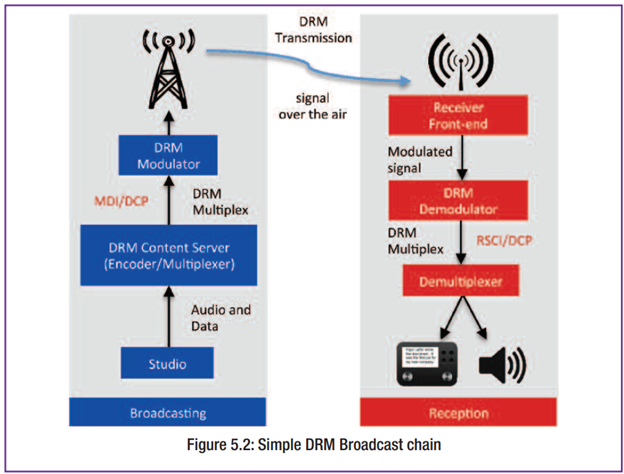

หลักการทำงานของระบบเครื่องส่ง DRM
การทำงานของระบบ DRM เริ่มจาก Content Server หรือศูนย์จัดการเนื้อหา ซึ่งทำหน้าที่รับข้อมูลเสียงและข้อมูลดิจิทัล จากนั้นจึงประมวลผล จัดแพ็กเกจข้อมูล และกำหนดค่าบริการต่าง ๆ เช่น ประเภทบริการ การเข้ารหัสเสียง และข้อมูลประกอบอย่าง Journaline หรือข้อมูลประกาศต่าง ๆ
เมื่อเตรียมข้อมูลเสร็จแล้ว ข้อมูลทั้งหมดจะถูกส่งต่อไปยัง Modulator ผ่านมาตรฐานการเชื่อมต่อ MDI (Multiplex Distribution Interface) และ DCP (Distribution and Communications Protocol) เพื่อให้ระบบของอุปกรณ์จากผู้ผลิตต่างรายสามารถทำงานร่วมกันได้อย่างยืดหยุ่น
ในขั้นตอนของ Modulator ระบบจะนำข้อมูลดิจิทัลที่ได้รับมาแปลงเป็นสัญญาณวิทยุที่พร้อมส่งออกอากาศ โดยผ่านกระบวนการสำคัญ เช่น การเข้ารหัสป้องกันความผิดพลาด การสลับลำดับข้อมูลเพื่อลดผลกระทบจากการเฟดดิ้ง และการมอดูเลตแบบ OFDM/COFDM ซึ่งเป็นเทคนิคที่ช่วยให้สัญญาณมีความทนทานต่อการรบกวนและเหมาะกับสภาพการแพร่กระจายคลื่นที่หลากหลาย
หลังจากนั้นสัญญาณจะถูกส่งไปยังภาคเครื่องส่งเพื่อขยายกำลังและกระจายออกสู่อากาศผ่านสายอากาศไปยังเครื่องรับของผู้ฟัง
องค์ประกอบหลักของระบบ
ระบบเครื่องส่ง DRM โดยทั่วไปประกอบด้วย 4 ส่วนสำคัญ คือ
1) Content Server
สำหรับจัดการเสียงและข้อมูล
2) Modulator
สำหรับแปลงข้อมูลดิจิทัลเป็นสัญญาณวิทยุ
3) Transmitter
สำหรับขยายกำลังสัญญาณและส่งออกอากาศ
4) Receiver
สำหรับรับและถอดรหัสสัญญาณให้ผู้ฟังใช้งานได้ ทั้งในรูปแบบเสียง ข้อความ หรือบริการข้อมูลอื่น ๆ
จุดเด่นของระบบ DRM
ระบบ DRM สามารถรองรับการกระจายเสียงได้ทั้งในย่าน AM และ FM/VHF รองรับการให้บริการได้มากกว่าหนึ่งบริการในความถี่เดียว และสามารถส่งทั้งเสียงกับข้อมูลไปพร้อมกันได้
นอกจากนี้ยังช่วยเพิ่มความสะดวกในการใช้งาน เช่น:
- การค้นหาสถานีอัตโนมัติ
- การแสดงข้อมูลชื่อบริการ
- การสลับความถี่อัตโนมัติเมื่อสัญญาณเปลี่ยนแปลง
จึงเหมาะสำหรับการใช้งานทั้งด้านวิทยุกระจายเสียงทั่วไป วิทยุเพื่อการศึกษา และระบบแจ้งเตือนภัยสาธารณะ
ข้อความสรุปสั้นสำหรับหน้าแรกเว็บ
DRM คือระบบวิทยุกระจายเสียงดิจิทัลที่พัฒนาขึ้นเพื่อยกระดับการออกอากาศจากระบบแอนะล็อกเดิม ให้สามารถส่งทั้งเสียงและข้อมูลดิจิทัลได้อย่างมีประสิทธิภาพ โดยทำงานผ่านลำดับจาก Content Server ไปยัง Modulator และ Transmitter ก่อนส่งต่อไปยังเครื่องรับของผู้ฟัง
ช่วยให้การกระจายเสียงมีคุณภาพสูงขึ้น ประหยัดพลังงานมากขึ้น และรองรับบริการสมัยใหม่ เช่น:
- ข้อความ
- ภาพ
- ข้อมูลการเรียนรู้
- การแจ้งเตือนฉุกเฉิน
